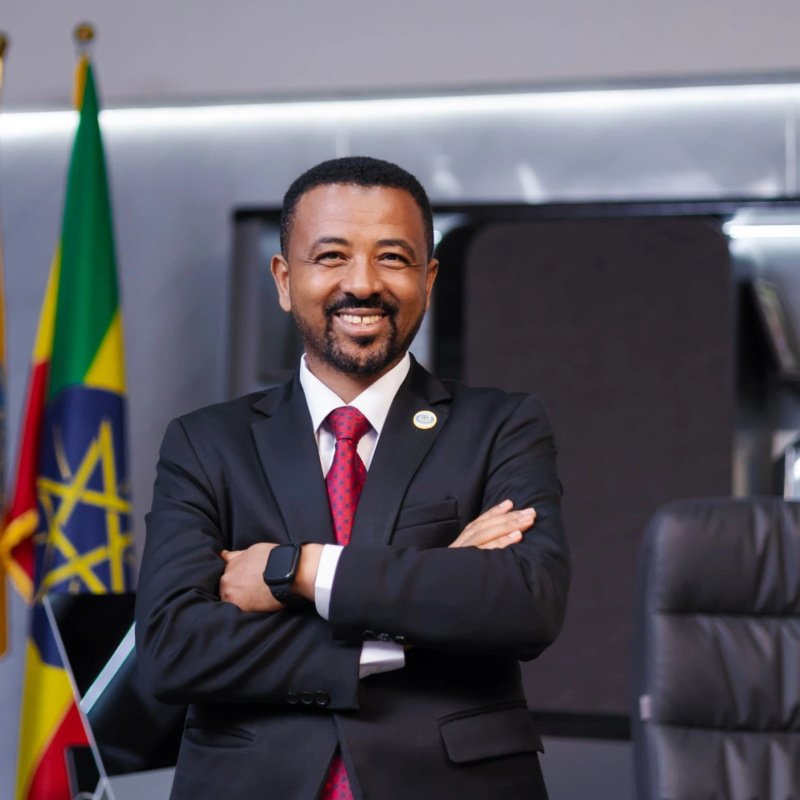

Dr. Asrat
Atsedeweyn.
President, Addis Ababa Science
and Technology University
Working across higher education, quantitative research and institutional leadership to connect academic knowledge with public service.

A BRIEF INTRODUCTION
Across scholarship
and institutional leadership.
Dr. Asrat Atsedeweyn Andargie is an Ethiopian academic leader and associate professor of biostatistics with a career spanning university administration, teaching and research.
He became president of Addis Ababa Science and Technology University on July 24, 2026, following service at the University of Gondar as acting president from March 4, 2019, and full president from May 6, 2019, through July 23, 2026.
His work spans research development, academic quality, university governance and cross-institutional collaboration.
Explore his experienceGrounded in teaching, research and public service.
of Gondar faculty
presidential service
presidency
EXPLORE THE PROFILE
The story, by chapter.
Institutions, people
& progress.
Presidential appointments, career timeline, boards and public service.
02 / SCHOLARSHIPResearch, training
& recognition.
Education, selected publications, international appointments and awards.
03 / CONNECTIONSConnect and
collaborate.
Professional profiles, social channels and institutional information.
THE CURRENT CHAPTER
Science and technology,
with society in view.
Dr. Asrat currently leads Addis Ababa Science and Technology University. His professional interests bring together research, education, innovation and institutional partnerships.
AASTU official website ↗University link supplied by Dr. Asrat ↗